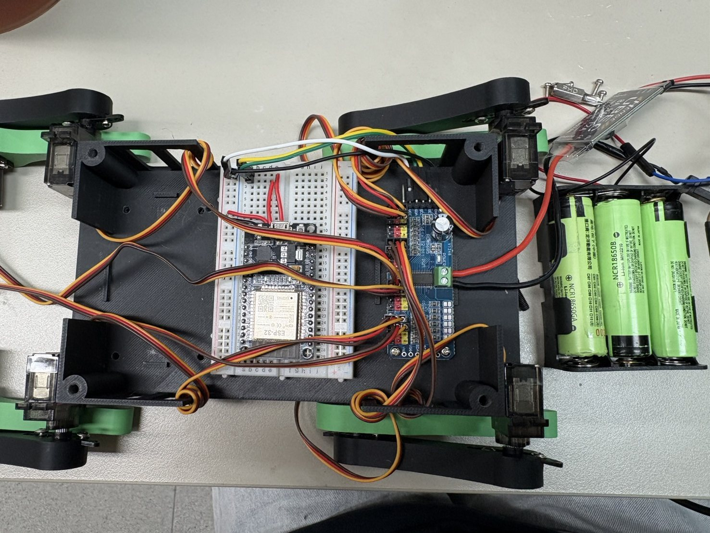
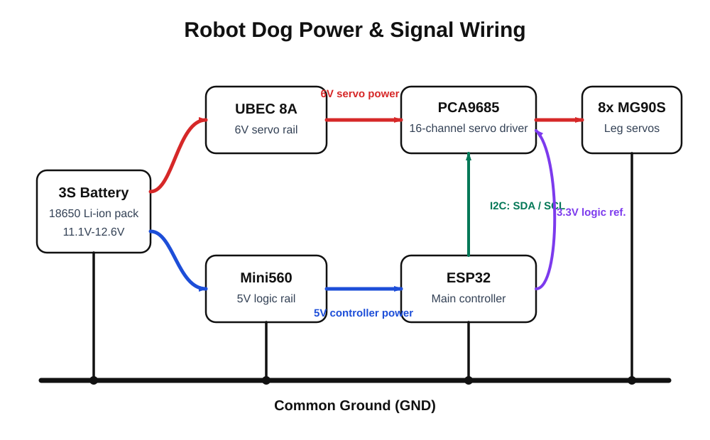
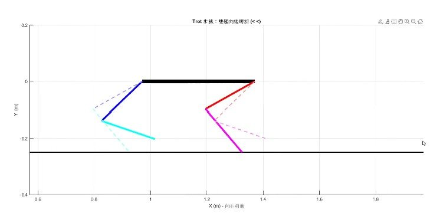
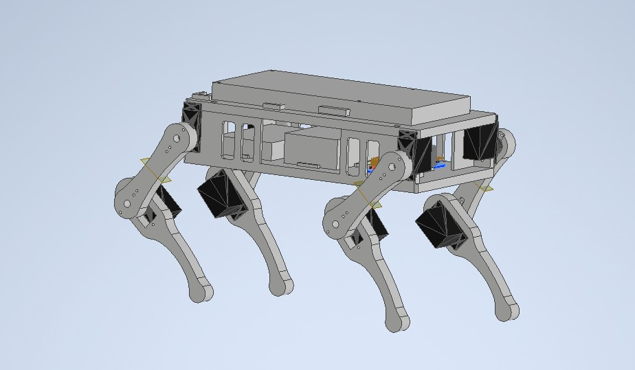

Case Study | Legged Robot System
Quadruped Robot Dog
A compact robot dog project where mechanical layout, servo calibration, inverse kinematics, embedded control, and repeated repair cycles all had to converge into a working physical system. This is my clearest legged-robotics bridge from coursework to graduate research interests.
Designed for integration, not just appearance.
I treated the body as a serviceable robot platform: servo replacement, wire routing, battery placement, center-of-gravity position, and repeated testing all influenced the 3D-printed structure. That made the robot easier to repair when hardware and software debugging overlapped.
The design goal was practical reliability: a robot that could survive enough iterations for the team to tune gait timing, calibration, and behavior sequencing.


Connected gait simulation to embedded servo output.
I used MATLAB to reason about gait trajectories and reachable workspace before translating the logic into Arduino code for ESP32 and the PCA9685 servo driver. The hardest part was making simulated leg motion match real servo directions, offsets, and timing.
Calibration
Matched servo direction, neutral angle, and mechanical geometry leg by leg.
Gait timing
Balanced support, foot trajectory, and update timing for stable motion.
Control structure
Separated gait update, inverse kinematics, and servo output for debugging.


Produced a robot that demonstrated system-level execution.
The final robot completed forward walking, standing, sitting, waving, and rocking. The project made the relationship between geometry, stiffness, calibration, power layout, and timing concrete rather than theoretical.
- Mechanical geometry and control software were validated together.
- Repairable hardware accelerated integration testing.
- Team leadership mattered most when failure causes crossed domains.
Behavior demo sequence
Engineering flow
Balanced servo placement, wire routing, battery location, and repair access.
Used MATLAB to check gait trajectory and inverse-kinematics behavior.
Moved from simulation logic to ESP32, PCA9685, and calibrated servo output.
Used repeated testing to tune timing, offsets, and behavior sequencing.
Technical decision table
| Constraint | Decision | Why it mattered | Skill demonstrated |
|---|---|---|---|
| Eight servos inside a compact body | Designed a serviceable 3D-printed structure | Made repair and calibration possible during integration | Mechanical packaging |
| Simulated motion had to match real hardware | Calibrated servo direction, offset, and leg geometry | Reduced mismatch between model and physical robot | System debugging |
| Multiple behaviors needed the same platform | Separated gait logic, inverse kinematics, and servo output | Made walking and gesture behaviors easier to tune | Embedded control structure |
Why this matters
Reviewer takeaway
This project is evidence that I can work across the full legged-robot stack: structure, actuation, kinematics, embedded control, and real hardware iteration. It became a practical bridge into my current ASR Lab focus on 12-DoF quadruped locomotion, Isaac Lab robot learning, actuator design, and sim-to-real debugging.